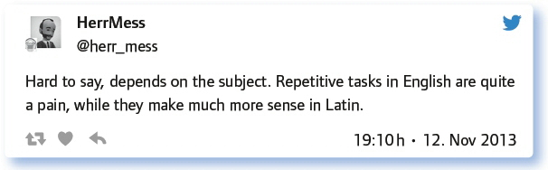

von Torsten Larbig
Da steht man nun als Lehrperson und gibt Aufgaben, wie eh und je. Ob nun eine Zelle mikroskopiert und anschließend gezeichnet oder der Inhalt einer Lektüre im Deutschunterricht zusammengefasst werden soll: Die Ergebnisse zeichnen sich durch eine große Ähnlichkeit aus. Der Grund dafür ist einfach. Aufgaben, bei denen es um Zusammenfassungen oder Darstellungen bekannter Wissensbestände geht, sind quasi eine „Aufforderung“, die Suchmaschine des eigenen Vertrauens zu benutzen und die Aufgaben so zu bewältigen. Das gilt für nahezu alle Fächer.
Oft betrifft das Phänomen die Hausaufgaben. Aber auch im Unterricht stellt sich die Frage nach Aufgabenformaten intensiv. Entsprechend sind beispielsweise Fragen der Aufgabenstellungen u. a. in der Schreibdidaktik in den Fokus der Wissenschaft geraten.
„Gute (neuartige) Aufgaben für einen guten Unterricht“ war am 12. 11. 2013 Thema. Und wenn auch schon wieder einige Zeit vergangen ist, sind die Fragen und auch Antworten nach wie vor hilfreich.
Welche Aufgaben kann man heute guten Gewissens nicht mehr stellen?
Zunächst einmal ist es hilfreich, Bilanz zu ziehen: Welche Aufgabentypen kommen in meinem Fach vor? Welche Aufgaben stelle ich selbst? Wie sinnvoll sind die Aufgaben bezogen auf den Lerneffekt? Was soll ich lieber bleiben lassen?
Gut, Vokabeln muss man vielleicht auswendig lernen. Formeln hingegen kann man in Formelsammlungen nachschlagen. Wie sieht das mit Gedichten aus? Und sollte man, so man Musik macht, nicht auch das eine oder andere Werk im Kopf haben? Es kommt auf den Kontext an! Und so wurde es auch in diesem #EDchatDE schnell auf den Punkt gebracht, ja, sogar Denkanregungen wurden gegeben, um das Problem der überflüssigen Aufgabentypen in den Blick zu nehmen.
Kontextlose stupide Abfrage wie Lückentexte sind absolut sinnlos.
Da fällt mir spontan keine ein – im richtigen Maß zur richtigen Zeit ist auch Auswendiglernen im Sinne von Automatisierung gut.
Aufgaben, die nur Zeit totschlagen sollen und das Kurzzeitgedächtnis unnötig befüllen, sind so etwas von out und so etwas von üblich.
Also ich finde auch das Abschreiben von der Tafel ein bisschen oldschool, auch bei Merksätzen. Oder reines Vorlesen von langen Texten.
Es kommt also auf Kontexte an. Je nach Kontext kann man durchaus auf Formate zurückgreifen, die andere „oldschool“ nennen. Denn es geht ganz schnell, da hört man zu dieser Frage auch andere Äußerungen, die auf anderen Erfahrungen zu beruhen scheinen:
Es geht um die Befähigung der Lernenden, etwas zu lernen und dies effizient zu tun. Dazu gehört sicher die Wiederholung. Das wusste man auch in Oldschool-Kontexten: Von der Tafel abschreiben unterstützt den Lernprozess möglicherweise an der einen oder anderen Stelle besser, als man glauben mag.
Gravierender als diese Fragestellung aber ist das Wikipediaproblem, das im Chat ausführlich diskutiert wurde, sodass dieser Austausch wohl für sich selbst stehen kann:
Und schon ist selbst an dieser Stelle der Diskurs ausdifferenziert. Wie schafft man zum Lernen nötige Redundanzen, ohne durch sie gleichzeitig das Lernen zu verhindern? Latein scheint von Wiederholungen zu leben, Englisch hingegen …

Sehr beliebt sind für die Überprüfung von Wissensbeständen auch Lückentexte. Sind diese aber im Kontext einer ganzheitlichen Sprachförderung und didaktisch betrachtet wirklich lohnenswert?
Bezüglich des Niveaus der Aufgaben, die im Unterricht und als Hausaufgaben gestellt werden können, können wir das Problem schnell auf den Punkt bringen:
Die T0TALE Überforderung, sodass sich SuS dann nicht mehr herantrauen bzw. die Lust verlieren.
Die T0TALE Unterforderung, sodass SuS gelangweilt sind und absolut keine Lust mehr haben.
Aufgaben, die heute nicht mehr wirklich gut in den Unterricht passen, zeichnen sich allesamt durch ein Kritierium aus, es sind …
Mit welchen Aufgaben förderst du Produktivität und Eigenaktivität in deinem Fach?
Betrachten wir die Frage nun von der anderen Seite her: Wenn es das Ziel ist, Produktivität und Eigenaktivität von Lernenden zu fördern, dann müssen Aufgabentypen her, die diesem Ziel dienen …
Portfolios sind nach wie vor in aller Munde, wenn auch deren praktische Nutzung in der Schule weit seltener stattzufinden scheint, als man sich angesichts ihrer Präsenz im didaktischen Diskurs vorstellen mag. Die Einführung von Portfolios und die Begleitung des von diesen geprägten Lernprozesses ist nicht ganz einfach und stellt einige Herausforderungen an die Lehrpersonen.
Aber es gibt ja die Gruppenarbeit, von Lehrern geliebt, von Schülern oft nicht. Wenn man sie aber gezielt und didaktisch begründet nutzt, kann sie gut eingesetzt werden.
Group work, but only when it makes sense. People have to work towards a certain goal that needs to be accomplished.
Gut strukturierte Gruppenarbeit mit Prozessvorgabe, aber frei wählbarem Inhalt funktioniert.
Kreative Herangehensweisen, die Inhalte in andere mediale Formen transformieren, sind auch gut geeignet, um Denkprozesse zu aktivieren und somit Lernen zu ermöglichen.
Andere bedienen sich einer Lernplattform, häufig ist das heute Moodle:
Aber warum soll man selbst Fragen erstellen? Überhaupt: Müssen es immer Fragen sein? Aufgaben sind doch keine Fragen, sondern komplexe Gebilde, die ein hohes Maß an Eigenaktivität der Lernenden ermöglichen, worauf dann auch beim #EDchatDE sehr deutlich hingewiesen wurde.
Die SchülerInnen stellen sich ihre EIGENEN Aufgaben, Fragen und arbeiten daran 7 Std. pro Woche.
Dafür brauchen die S. aber ein großes Vorwissen. Sonst können sie keine inhaltstiefen Fragen stellen. Sehe ich kritisch.
Was passiert, wenn man diesem Rat von @jensgrb folgt und die Skepsis überwunden wurde, kann man z. B. an den folgenden Beispielen sehen. Die Lernenden hatte völlig freie Hand, was sie nach einer länger Unterrichtseinheit mit dem erworbenen Wissen und den ihnen verfügbaren Kompetenzen im Rahmen des Literaturunterrichts machen wollten.
Schüler machen aus Faust einen Raptext http://t.co/5uNBMVgDtf
Schüler arbeiten zu Fontane „Irrungen, Wirrungen“ http://t.co/av8l4MVaVc
Büchners Lenz (Auszug) als Lego-Lenz (Video auf Youtube!) http://t.co/00XI04bbEc – Ergebnisse freier Aufgaben!
Darüber hinaus sind Aufgaben oft sehr anregend, die den Transfer ermöglichen. Indirekt wurde das schon gesagt, hier soll es aber noch einmal auf den Punkt gebracht werden:
Gute Transferaufgaben sind: Rollenspiel, Stellung nehmen, einem Mitschüler in eigenen Worten etwas erklären, einen Blogartikel verfassen.
Ja, Blogs haben viel Potenzial für das Lernen – nicht nur in der Schule!
Neuartige Aufgabenformate, die in Wirklichkeit ja gar nicht so neuartig sind, sondern vor allem das Ergebnis des Einzugs konstruktivistischer Ideen in die Didaktik. Dabei stellt sich die Frage nach der Rolle der Lehrperson. Auch wenn Begriffe wie „Lerncoach“ oder „Lernbegleiter“ heute oft so genutzt werden, dass der Eindruck entstehen könnte, Lernende sollten ganz auf sich selbst gestellt lernen: Ohne Anleitungen geht es nicht. Ganz im Sinne des Cognitive Apprenticeship kann man sagen:
Dabei muss immer klar sein, warum welche Aufgaben gute Aufgaben sind – und welche Aufgaben vielleicht auch nicht weiterhelfen.
Und außerdem:
Wie kannst du Leistung in offenen Lernformen und Aufgaben messen?
Die Leistungsmessung ist im gegenwärtigen System, in dem Lehrpersonen Unterricht gestalten müssen, einer der wesentlichen Knackpunkte. Sind Lernformen offen, so können die Arbeiten nicht mehr alleine auf Basis der Inhalte bewertet werden. Andere Bewertungsformen können aber ins Spiel gebracht werden:
Das ist ganz schwierig. Ist aber mit klaren Kompetenzrastern möglich.
Kriterien werden zusammen mit SuS vorher entwickelt. Nach denen kann man dann bewerten.
Kriterien mit SuS gemeinsam erarbeiten. Dann erfolgt individualisiertes Peer-feedback.
Und wenn man früher in Gruppenarbeiten nie so genau wusste, wer eigentlich was erarbeitet hat, so kann man auch hier Abhilfe schaffen, wenn Gruppenarbeiten z. B. online dokumentiert werden müssen:

Und noch ein paar Tipps, die für sich alleine stehen können:
Meistens wissen Schüler selbst, Leistungen in offenen Formen einzuschätzen. Und zwar oft besser als der Lehrer.
Mit der Kombination aus „Punktepool“ und eigenen kriteriengeleiteten Beobachtungen habe ich gute Erfahrungen gemacht.
Wie immer ist Transparenz essenziell.
Leistungsmessung ist oft sehr subjektiv (mündliche Note) und trotzdem zutreffend. Mut zum eigenen Urteil ist gefragt, auch bei Gruppenarbeit.
Mit Wikis und Blogs ist das einfach. Aber es geht auch bei kreativen Leistungen. Am besten Peer-Review und Peer-Assessment.
Wenn die Inspirationen aus diesem Kapitel noch nicht reichen, hier noch ein paar Tipps aus der #EDchatDE-Community, die helfen können, entsprechende Aufgaben zu finden:
Get great suggestions and inspiration from teacher blogs. They’re extremely dedicated.
Again and again, great tasks are mentioned in my Twitter timeline. So exchange with colleagues is helpful.
Frag die Schüler, was sie gerne wissen wollen, was sie üben wollen, lass sie selber Aufgaben stellen – geht oft.
Inspiration finde ich in Büchern oder Blogs und dann passe ich an / wandele ab bzw. würze ich mit meinem Eigensinn.
Textbooks are helpful. It is a pitty, I can not easily remix the content due to copyright.
Great ideas for English lessons in mailing list „enpaed“: http://t.co/SUDExIap3P (closed group, apply 4 membership).
Als Mitglied einer PLG (professionelle Lerngruppe) erhalte ich von Kollegen gute Ideen. Suche in Fachliteratur, Blogs, Tweets.
Und bei zum.de gibt es auch viele Sachen, die man sehr gut nutzen kann.
Für die Religionslehrer: rpi-virtuell und guck auch mal bei openreli.de.
Bei Mathe hilft: https://t.co/jVkY9sybMS
Ich fahre zu Tagungen und Fortbildungen. Das liefert mir auch neue Ideen. Ganz undigital.
Kann Pinterest wärmstens empfehlen. M00Cs sind auch tolle Quellen für Ideen. Und Google natürlich.
Fazit:
Viele Aufgabentypen sind in Zeiten des Internets obsolet geworden. Andere Aufgaben stehen bezüglich ihrer Wirksamkeit auf dem Prüfstand. Neue Aufgabenformate sind aber so schwer nicht zu finden, wenn man sie auf das Lernen der Schüler bezieht und von diesem Lernen her entstehen lässt. Darüber hinaus ist das Thema in der didaktischen Forschung zur Zeit aktuell, sodass auch der Blick in Fachzeitschriften zur Didaktik des je eigenen Unterrichtsfachs weiterhelfen kann. Wichtig scheint uns der Hinweis, dass auch die Lernenden in vielen Fällen durchaus in der Lage sind, eigenständig Aufgaben zu entwickeln, die dem eigenen Lernprozess dienen können. – Darüber hinaus empfehlen wir den intensiven Austausch über Aufgabenformate mit den Lernenden und auch mit Kolleginnen und Kollegen. Es kann sehr spannend sein, gemeinsam Aufgaben zu entwickeln. Digitale Hilfsmittel wie Etherpad, GoogleDocs oder andere Kollaborationsplattformen im Internet können hierbei hervorragende Helfer sein.
Link zum vollständigen Protokoll: